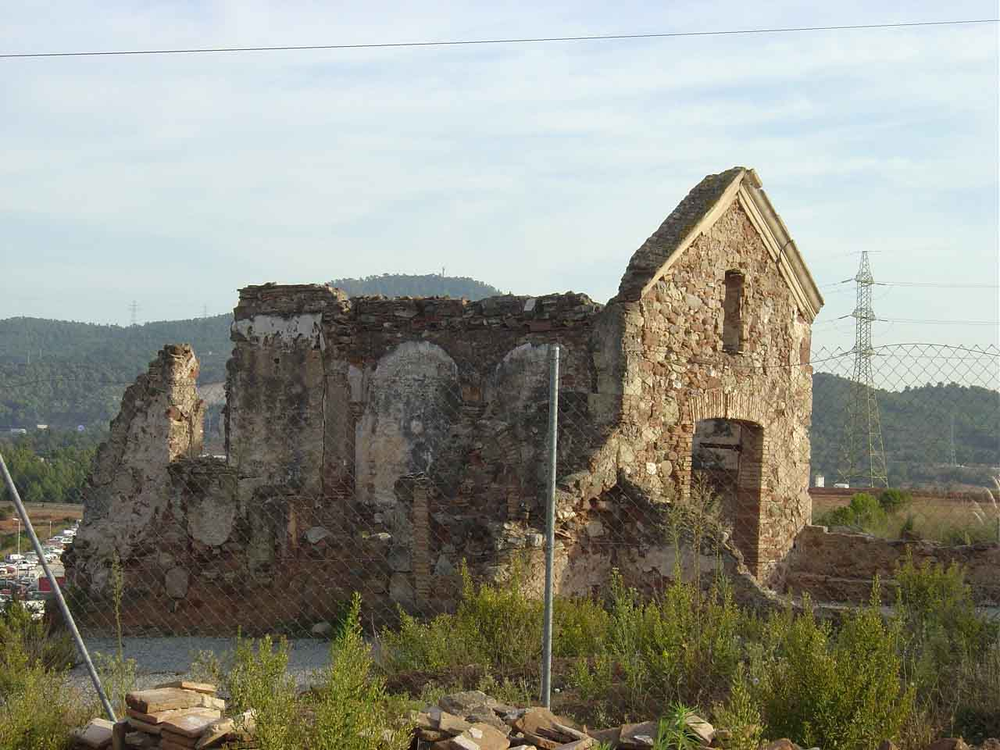
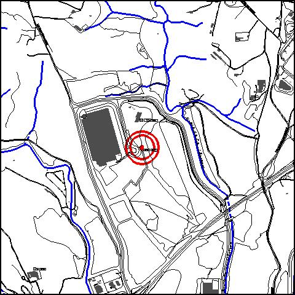

|  |  |
Nom de l’element: Ermita de Sant Joan
Clau d’identificació: A.13
Nucli o indret: Pol. Ind. Can’Esteper.
UTM: X= 416.742, 4.591.678.
Règim del sòl: sòl urbà.
1.1. Època de construcció i tipologia:
Ermita de l’any 1.040 i reconstruïda al s. XVIII amb fragments de tègules i carreus de l’època romana, coneguda com Sancto Johanne Bene Vivere. Es tracta d’una edificació de planta rectangular, però tan sols queda en peu l’estructura murària de pedra de tres parets perimetrals i un frontis a dues aigües amb una motllura. S’endevinen uns remats laterals de cobert amb teules. Presumiblement la pedra prové d’un altar romà. En la part inferior de l’ermita s’han trobat tombes romanes, però tenen una molt difícil accessibilitat per la vegetació existent. En uns 40 m es van descobrir 50 sepultures i dos ossaris dels segles VI i VII. Hi havia les restes d’una columna, avui desapareguda, que pertanyia a un mil·liari o a una fita divisòria. Presenta un gravat on diu “A Júpiter, el més gran i el més bo dels déus”.
1.2. Estat de conservació:
En ruïnes. Tots els elements constructius de l’ermita es troben en ruïnes. Part de la façana es manté en peu.
1.3. Ús actual:
Patrimoni cultural i arqueològic.
1.4. Accés:
Accés fàcil des del c/ Ferrocarril o c/ Retorn del Pol. Ind . Ca n’Esteper.
Ermita del segle XI, amb elements d’origen romà.
3.1. Usos admesos:
Religiós, recreatiu cultural i social.
3.2. Condicions d’ordenació:
Segons Pla Especial a redactar.
3.3. Accés i serveis:
Accés des del c/ Ferrocarril o c/ Retorn del Pol. Ind . Ca n’Esteper.
BCIL (Bé Cultural d’Interes Local)